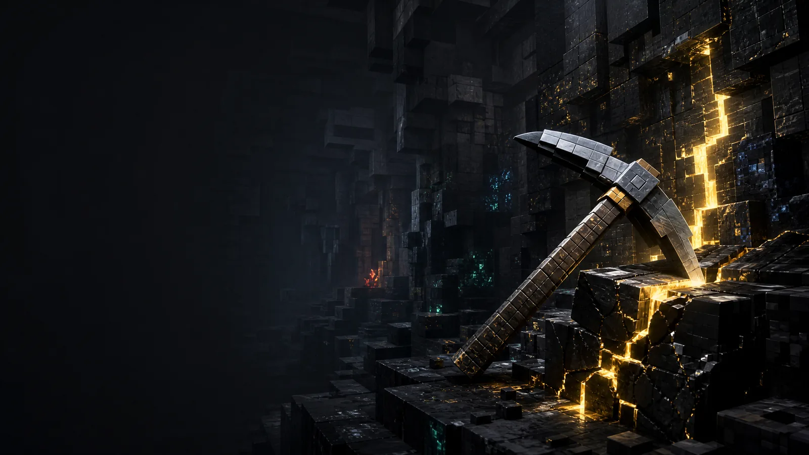
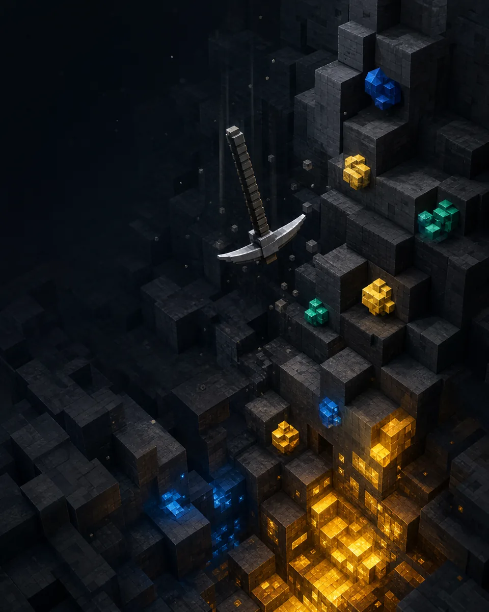

Независимый навигатор по игре
Falling Pickaxe: путеводитель по игре в стиле кубической шахты
Falling Pickaxe — казино-игра от PixMove в пиксельной шахтёрской эстетике. Здесь собраны материалы, которые помогают сначала разобраться в формате, демо и правилах, а уже затем самостоятельно проверять условия оператора.
Только 18+. Проверьте возрастные и региональные требования до запуска.

PIXEL MINE / GUIDEПеред первым запуском
Не угадывайте условия —
разберите маршрут.
Сайт создан как ориентир по теме Falling Pickaxe: он не принимает ставки, не хранит данные и не заменяет официальные правила оператора. Все параметры игры, акции и региональную доступность нужно сверять непосредственно там, где вы планируете её открыть.
Читать обзор игрыБыстрый ориентир
Что известно об игре
Показатели, для которых нет подтверждённого источника, намеренно не подменяются случайными числами.
| Провайдер | PixMove |
|---|---|
| Жанр | Казино-игра в эстетике кубической шахты |
| Демо-режим | есть |
| RTP и волатильность | 98%, средняя |
| Максимальный выигрыш | х10 000 |
| Возрастной доступ | 18+ |
Три слоя знакомства
От интерфейса к осознанному решению
Откройте демо
Посмотрите последовательность раунда без ставки и отметьте непонятные элементы.
К демо →02Разберите механику
Найдите правила для блоков, кирки, падения символов и множителей.
К механике →03Установите предел
Проверьте возраст, регион и личные лимиты до перехода к реальному режиму.
О контроле →
Как читать игру
Визуальный эффект не заменяет правило.
В Falling Pickaxe центральными образами служат кирка, блоки и шахтные слои. Их значение для результата нужно искать в справке версии игры. Не следует делать вывод о вероятности или выплате по анимации, цвету или яркому обозначению.
Демо полезно для знакомства с темпом интерфейса, а раздел механики — для подготовки списка вопросов к правилам оператора.
Короткие ответы
FAQ о Falling Pickaxe
Это казино-игра, указанная как продукт PixMove, с эстетикой кубической шахты. Сайт объясняет, где искать правила и как безопасно подойти к знакомству.
При наличии у оператора демо можно использовать для знакомства с интерфейсом. Условные средства в такой сессии не имеют денежной стоимости.
Нет. Игра связана с риском, а информационный сайт не обещает результата и не публикует ложных гарантий.
Только в официальных условиях выбранного оператора. Этот сайт не выдумывает суммы, сроки или рабочие коды.